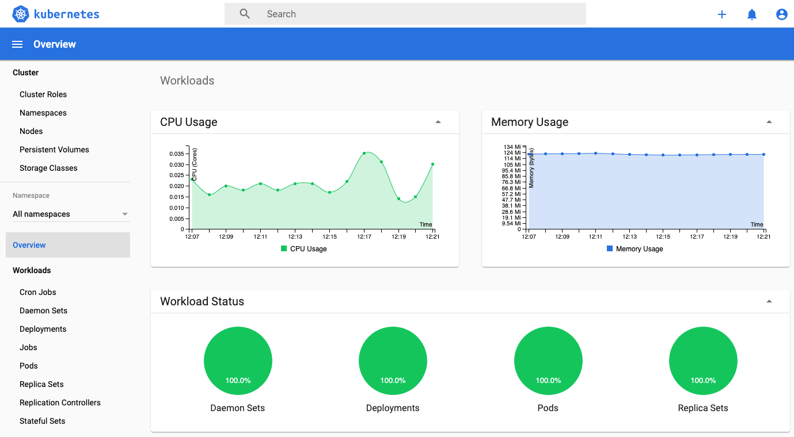
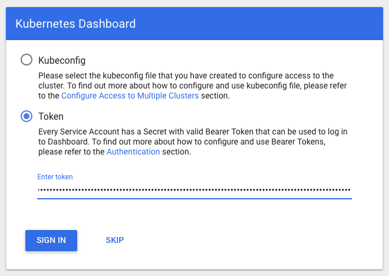

Dashboard Kubernetes
Vamos implantar o Kubernetes Dashboard completo em seu cluster
Sabemos que temos o servidor de métricas instalado e os grupos de segurança configurados e que temos instalado e configurado o kubectl que fizemos durante o tutorial.

Instalaçao
kubectl apply -f https://raw.githubusercontent.com/kubernetes/dashboard/v2.0.5/aio/deploy/recommended.yaml
Manifesto
curl -o recommended.yaml https://raw.githubusercontent.com/kubernetes/dashboard/v2.0.5/aio/deploy/recommended.yaml kubectl apply -f recommended.yaml
Conta de serviço
Criaremos uma conta de serviço eks-admin e vinculação de função de cluster
cat <<EOF | kubectl apply -f - apiVersion: v1 kind: ServiceAccount metadata: name: eks-admin namespace: kube-system --- apiVersion: rbac.authorization.k8s.io/v1beta1 kind: ClusterRoleBinding metadata: name: eks-admin roleRef: apiGroup: rbac.authorization.k8s.io kind: ClusterRole name: cluster-admin subjects: - kind: ServiceAccount name: eks-admin namespace: kube-system EOF
Conectando no Dashboard
Obtendo o Token Admin
Agora que o Dashboard está implantado e você tem uma conta de serviço de administrador, iremos usa-la para visualizar e controlar o cluster
Para isso teremos que obter o token desse usuário
Copie o valor "authentication_token" da saída do comando abaixo para aplicarmos no painel que será requisitado ao iniciar.
kubectl -n kube-system describe secret $(kubectl -n kube-system get secret | grep eks-admin | awk '{print $1}')
Acessando o dashboard
kubectl proxy
Acesse o endereço no seu browser preferido Dashboard
Será apresentado uma tela abaixo, escolha a opção Token e cole o token acima obtido e voalá
